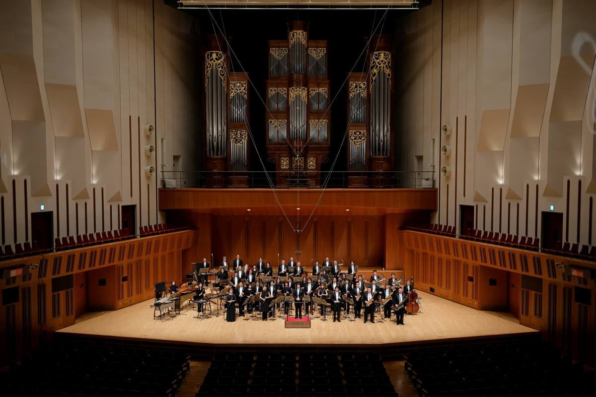

東京佼成管樂團 Tokyo Kosei Wind Orchestra
東京佼成管樂團於1960年5月以「佼成吹奏樂團」成立，1973年更名為「東京佼成管樂團」，並自2022年4月起以「一般社團法人東京佼成管樂團」名義持續運作，是日本最具代表性的職業管樂團之一。
2024年4月起，由大井剛史擔任第六任常任指揮，中橋愛生擔任樂藝員；桂冠指揮為佛瑞德里克・費奈爾，特別客席指揮為托馬斯・桑德林，首席客席指揮為飯森範親。
樂團演出曲目涵蓋吹奏樂原創作品、古典改編、流行及跨界音樂等多元風格，以卓越的音樂藝術性深受各地觀眾喜愛，並透過大量錄音與媒體演出，持續推動吹奏樂文化的提升、普及與發展。
團員名單
指揮大井剛史
Picc.丸田悠太
Fl.白戸美帆、坂本伽耶
Ob.大庭蓉子、桜田昌子
E. Hn.藤原博司
Fg.柿沼麻美、垣内紀子、大内洋介
Es Cl.松生知子
B♭Cl. 1st野田祐太郎、林裕子、近野千昌
B♭Cl. 2nd大浦綾子、河西拓也、森卓也
B♭Cl. 3rd徳武敦、後藤榛花、小野寺緑
A. Cl.石田勝
B. Cl.泊明里
CB. Cl.佐藤義人
A. Sax林田祐和、五十嵐健太、江川良子
T. Sax松井宏幸、宮越敦士
B. Sax栃尾克樹
Tp.奥山泰三、河原史弥、講崎里穂、佐藤成美、瀬戸口茜、中嶋尚也
Hn.堀風翔、小助川大河、小山千鶴、藤井春香
Tb.石村源海、岩石茉奈、上田愛香
B. Tb.恵藤康充
Euph.岩黒綾乃、佐藤悠光
Tuba池田侑太、中山彰
Cb.前田芳彰
Timp.坂本雄希
Perc.和田光世、大河原渉、久米彩音、古賀優、武山芳史、土屋吉弘、三橋敦
Harp安井わかな
事務職員勝川本久、篠原華、佐原由起、梅津敦、森奈那子、古畑玲